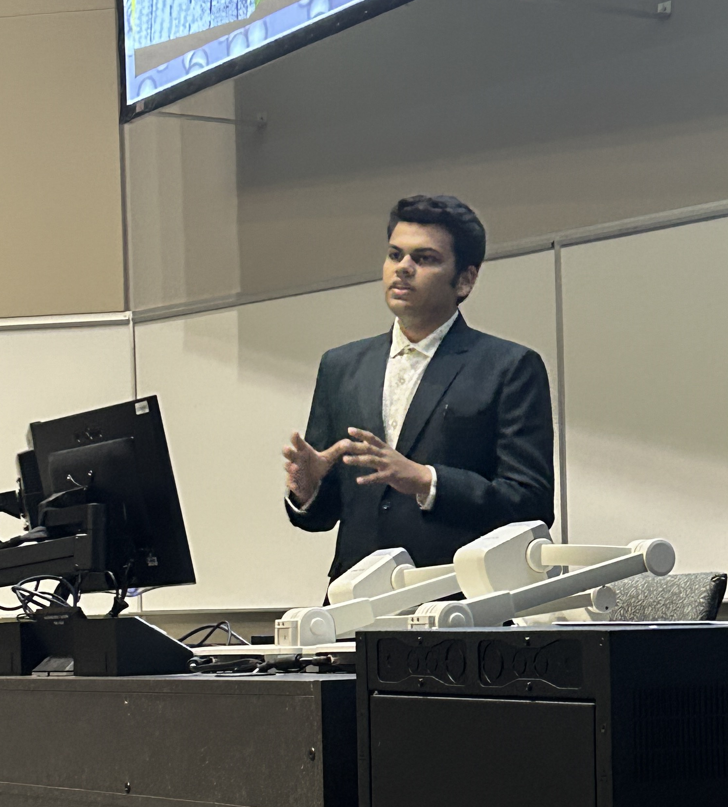
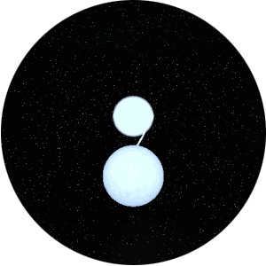
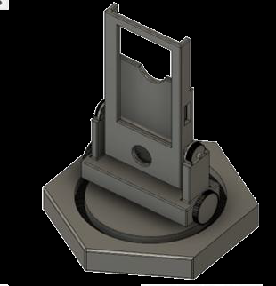
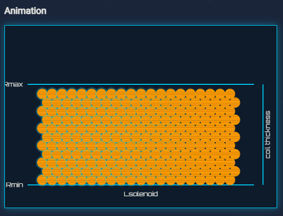

Working across astrophysics, machine learning, and computer vision — from gravitational‑wave data to electric propulsion and low‑light imaging.

My work moves between observing the universe, modeling how spacecraft propulsion behaves, and teaching machines to see clearly in the dark.
Pulsar timing, white dwarf binaries, protoplanetary disk chemistry, and transient noise classification in LIGO data.
Machine-learning performance prediction for low-power Hall effect thrusters and plasma plume simulation.
Event-based star tracking, generative restoration of low-SNR astronomical images, and object detection benchmarking.

Galactic double white dwarf binaries are a prolific LISA source class, though most detached binaries appear as mono-frequency sources. This work presents optical time-series spectroscopy for known LISA white dwarf binaries, fitting the radial-velocity phase across epochs to demonstrate that orbital-frequency-change measurements are possible for non-eclipsing systems — enabling physical understanding of these future multi-messenger laboratories.
Galactic double white dwarf binaries are a prolific LISA source class, though most detached binaries appear as mono-frequency sources. This work presents optical time-series spectroscopy for known LISA white dwarf binaries, fitting the radial-velocity phase across epochs to demonstrate that orbital-frequency-change measurements are possible for non-eclipsing systems — enabling physical understanding of these future multi-messenger laboratories.


Reach out about research collaboration, graduate admissions, or anything in between.